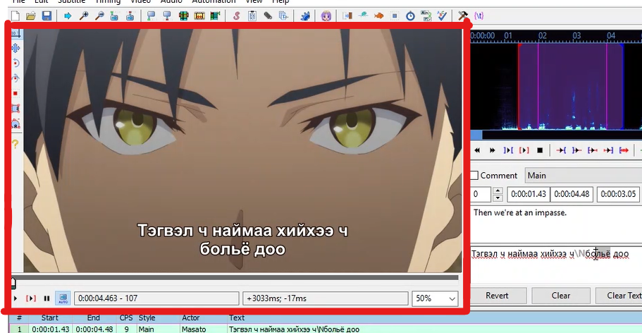
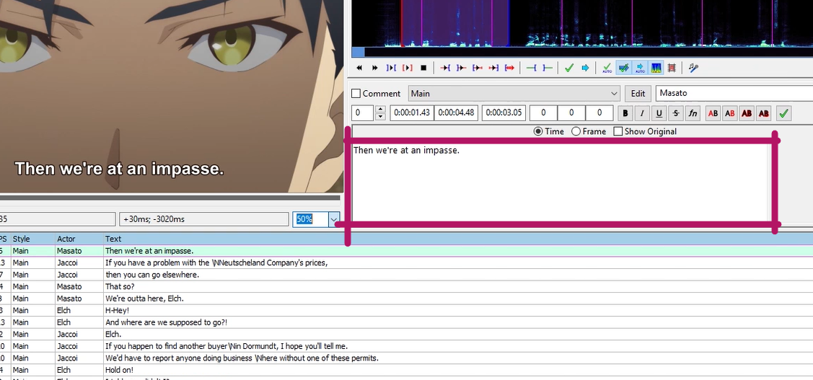
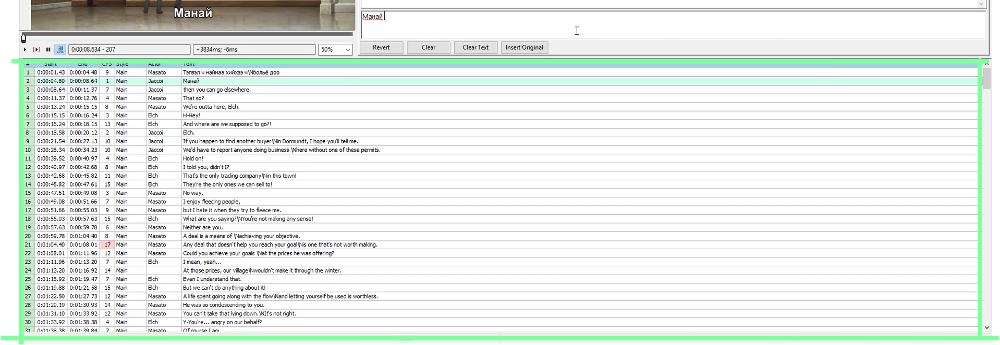
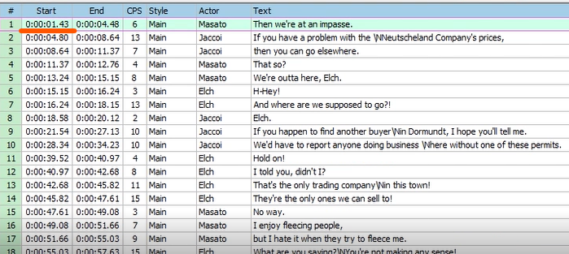
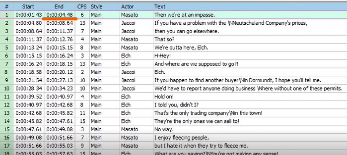

Товчоор
ManimeS - Anime багийн орчуулагч нарын хийх зүйлс
- Орчуулах анимэгээ татах
- Орчуулах
- Орчуулсан Subtitle аа энкодлогчдоо өгөх.

Та анимэ орчуулгийн талаар мэдэх хэрэгтэй бүхийл зүйлээ энд сурах болно.
ManimeS - Anime багийн орчуулагч нарын хийх зүйлс
Таньд анимэгээ татхад хэрэг болох хамгийн чухал програм бол торрент юм:
uTorrent, BitTorrent, qBittorent гэсэн гурван төрлийн торрентийг хүмүүс хамгийн өргөнөөр ашигладаг. Эндээс хамгийн найдвартай нь qBittorrent бөгөөд торрент програмуудын эцэг гэж хэлж болхоор урт удаан түүхтэй програм юм. (Хэрэв torrent програмын талаар мэдлэгтэй, аль хэдийн суулгасан, ашигладаг бол шууд дараагийн хуудас уруу алгасаж болно.)
За бүх бэлтгэлээ хангасан бол хамгийн чухал ажилдаа орцгооё.
Зүүн талд байрлах дэлгэцэнд хадмалаа анимэ дотор хэрхэн харагдаж байгааг хянана.
Баруун талын хэсэг бол хадмалаа орчуулж бичих хэсэг
Доод талын хэсэг бол анимэ дээрх бүх хадмалууд байрлах хэсэг
Анимэнд байдаг хадмалууд нь бүгд эхлэх цаг
дуусах цагтай байдаг ба зөвхөн тэр цагын үед л дэлгэцэнд ил харагдаад буцаад алга болох маягаар ажилладаг.
Анимэ орчуулахдаа аль болох цаадах япон хэлнээс нь сонсож орчуулж байх нь хамгийн зөв орчуулхад туслах ба японоор нь ойлгохгүй тохиолдолд л англи хадмалаас харж орчуулах хэрэгтэй. Ойлгохгүй үг, өгүүлбэр гарч ирсэн тохиолдолд Болор Толь ашиглах аль эсвэл багийн бусад гишүүд болон хариуцсан энкодлогчоос асууж тусламж хүсэж болно. (ManimeS-н орчуулагч нар Google Translator-р орчуулж доошоо орохгүй шүү. xD )
Заримдаа урт, олон өгүүлбэрээс бүтсэн хадмал бичих шаардлага гардаг. Тэр үед AEGISUB програм нь дэлгэцэнд багтахаа байгаад ирэх үед нь автоматаар хуваагаад өгдөг ч гэсэн заримдаа бид өөрсдөө хувааж зарим хэсгийг дараагийн мөрөнд шилжүүлэх хэрэгтэй болдог. Тэр үед яг мөр шилжүүлэх хэсэг хүртлээ бичээд Keyboard ноосоо "Shift" + "Enter" дархад хадмал дунд чинь "\N" гэсэн код гарч ирэх ба энэ нь мөр хуваахыг илтгэнэ. Тэгээд тухайн кодын араас дараагийн мөрөнд байрлах хэсгээ бичнэ. Доорх бичлэгээс сураарай.
Хадмал орчуулга нь нүдэнд наалдацтай ойлгомжтой байх нь цэвэр орчуулагчаас хамаардаг учир аль болох зөв бичих дүрмийн алдаа бага гаргах хэрэгтэй. Хэрэв зөв буруу нь эргэлзээтэй үг бичих шаардлагтай болвол тухайн үгээ spellcheck.gov.mn ээр орж шалгах боломжтой ба доорх бичлэгээс дэлгэрнгүй үзээрэй.
Орчуулах анимэгээ татчихсан бол одоо орчуулах хэрэгслээ татах хэрэгтэй. Анимэ орчуулгийг бусад төрлийн кино, видео, клип дээр хадмал хийдэг ямар ч програм ашиглаж хийж болох болов ч хамгийн тохиромжтой нь Aegisub юм.
Torrent оор анимэ татхын тулд .torrent гэсэн file хэрэгтэй ба энийг таньд Контент админууд өгөх юм.